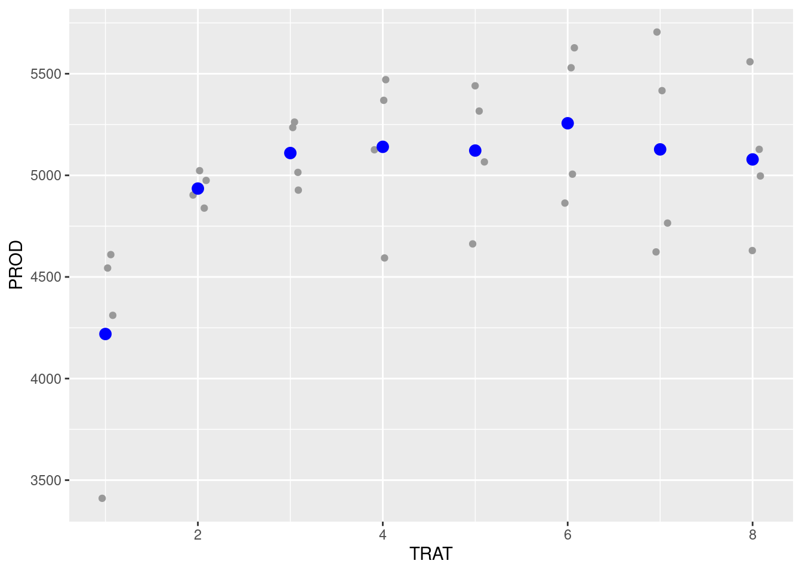
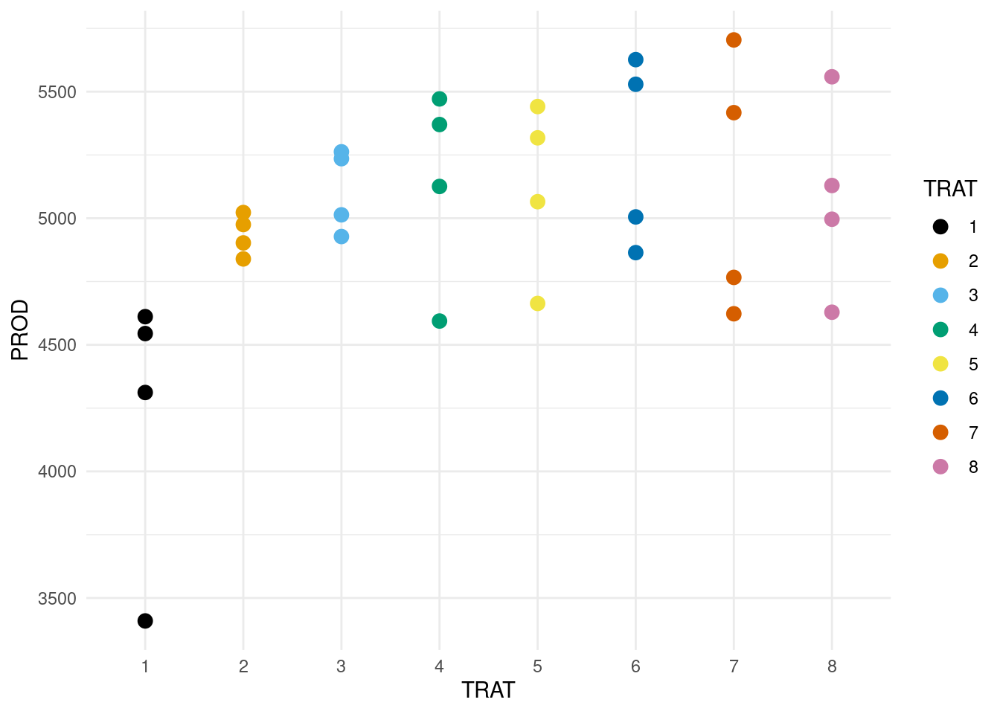
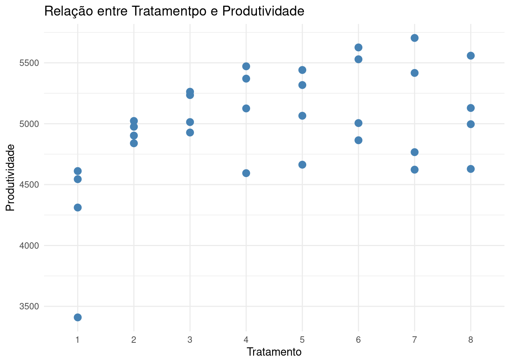

Gráficos de dispersão, histograma e gráfico de densidade
Author
MARIA IZABEL
Gráficos de Dispersão, Histograma e Gráfico de Densidade
Gráficos de Dispersão (Scatterplots)
Gráficos de dispersão são utilizados para representar a relação entre duas variáveis numéricas contínuas. Cada ponto no gráfico representa uma observação, posicionada conforme os valores das variáveis nos eixos X (horizontal) e Y (vertical). São úteis para identificar padrões, tendências ou correlações entre variáveis como tempo e velocidade, temperatura e umidade, comprimento e largura, entre outras.
Com o pacote ggplot2, utilizamos a função geom_point() para construir scatterplots. Esta função permite definir diversas estéticas:
alpha: controla a transparência dos pontos, útil para reduzir sobreposição;
colour: define a cor dos pontos com o argumento color = "nome da cor";
fill: define o preenchimento da forma, também com o nome da cor entre aspas;
shape: altera o formato dos pontos (como círculos, quadrados ou triângulos), permitindo diferenciar categorias;
size: controla o tamanho dos pontos, com um valor numérico.
Importação de dados
Para importar uma aba específica de um arquivo Excel, usa-se a função read_excel() do pacote readxl. É necessário informar o caminho do arquivo (entre aspas) e, após a vírgula, o nome ou o número da aba. O nome do data frame atribuído geralmente corresponde ao nome da aba para facilitar a organização.
library(tidyverse)
── Attaching core tidyverse packages ──────────────────────── tidyverse 2.0.0 ──
✔ dplyr 1.1.4 ✔ readr 2.1.5
✔ forcats 1.0.0 ✔ stringr 1.5.1
✔ ggplot2 3.5.2 ✔ tibble 3.3.0
✔ lubridate 1.9.4 ✔ tidyr 1.3.1
✔ purrr 1.0.4
── Conflicts ────────────────────────────────────────── tidyverse_conflicts() ──
✖ dplyr::filter() masks stats::filter()
✖ dplyr::lag() masks stats::lag()
ℹ Use the conflicted package (<http://conflicted.r-lib.org/>) to force all conflicts to become errors
Visualização: Depois, plota-se os dados definindo-se o eixo x e depois o eixo y. Usa-se o stat_summary para plotar a média de forma simples.
#names(fungicida_campo) # para verificar os nomes das colunas do seu dataframefungicida_campo |>ggplot(aes(x = TRAT, y = PROD)) +geom_jitter(width =0.1, color ="gray60") +stat_summary(fun = mean, geom ="point", color ="blue", size =3)

#install.packages("Hmisc") #pacote Hmisc (que define mean_se)#library(Hmisc) ## para mean_sefungicida_campo |>ggplot(aes(x = TRAT, y = PROD)) +geom_jitter(width =0.1, color ="gray60") +stat_summary(fun.data = mean_se, color ="blue")
Alterando o eixo x, presente no banco de dados fungicida_campo, é possível representar os dados em função da produtividade. Ao incluir o argumento alpha dentro da função geom_point(), os pontos no gráfico se tornam mais transparentes, facilitando a visualização em casos de sobreposição.
library(ggthemes)fungicida_campo$TRAT <-as.factor(fungicida_campo$TRAT) # garantir que TRAT seja fatorfungicida_campo |>ggplot(aes(x = TRAT, y = PROD, color = TRAT)) +geom_point(size =3) +scale_color_colorblind() +theme_minimal()

Para adicionar uma linha de tendência aos dados, utiliza-se a função geom_smooth(). O argumento method = "lm" ajusta uma regressão linear, enquanto se = FALSE remove a faixa de confiança. O parâmetro linetype permite definir o estilo da linha.
fungicida_campo |>ggplot(aes(x = TRAT, y = PROD)) +geom_point(size =3, color ="steelblue") +geom_smooth(method ="lm",se =FALSE,color ="black",linetype ="solid",size =2) +theme_minimal() +labs(title ="Relação entre Tratamentpo e Produtividade",x ="Tratamento",y ="Produtividade")
Warning: Using `size` aesthetic for lines was deprecated in ggplot2 3.4.0.
ℹ Please use `linewidth` instead.
`geom_smooth()` using formula = 'y ~ x'

Gráficos de dispersão para análise fatorial
Vamos trabalhar com outro subconjunto de dados: Milho. Nele iremos ver a undefined